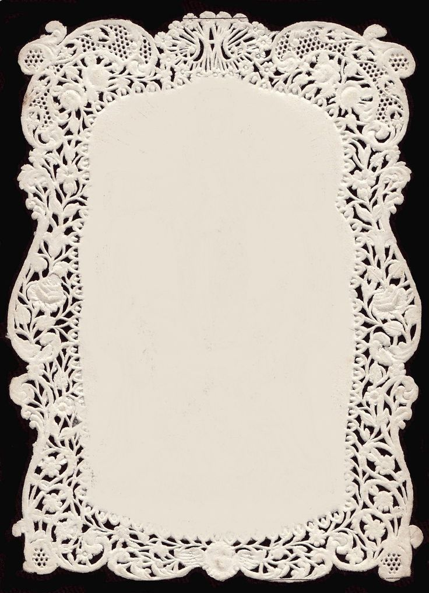

Lisbon
The city where I was born and where my story begins.
Hi, I'm Marta.
I'm a Communication Design student based in Porto, originally from Lisbon and shaped by the years I've spent living in the Azores.
My practice moves between web design, visual identities, photography and moving image.
DESIGN / WEB / PHOTOGRAPHY / VIDEO / VISUAL IDENTITY
I like creating work with personality, but I don't want every project to have the same personality.
For me, design is about understanding what makes each idea, person or brand unique and translating that into a visual language of its own.
The city where I was born and where my story begins.
A place that changed my relationship with nature, space and the way I observe the world around me.
Where I currently study Communication Design at ESAP and continue developing my creative practice.
03 / HOW IT STARTED
I studied Visual Arts during secondary school, where I started experimenting more seriously with image, composition, photography and creative projects.
Through the school's Art Studio I participated in several projects linked to the National Arts Plan and had the opportunity to work alongside artists from different backgrounds, including international artist Gregory Leloy.
Collaborative projects, exhibitions and competitions became an important part of how I learned — not only by studying art, but by creating work with people and for real contexts.
I am currently in my third year of Communication Design at ESAP in Porto, where my interests have expanded into web design, digital interaction, visual identity and multimedia.
Creating digital spaces with strong identities, clear structure and thoughtful interaction.
Building visual systems that feel specific to the idea or brand behind them.
Observing people, places, light and small moments — often through analogic film.
Exploring atmosphere, narrative and emotion through moving image.
Connecting concept, image, typography and experience into one coherent world.
05 / THROUGH MY LENS
Photography is one of the areas I feel most connected to, especially analogic photography.
I like the slower process of film — waiting, observing and accepting that not everything needs to be immediate or perfectly controlled.


During secondary school I developed a project that brought crochet into a younger generation while creating a space for different generations to meet.
Residents from elderly care homes were invited into our school to crochet alongside students, exchanging knowledge, conversations and experiences through one shared activity.
Different ages.
Different stories.
One thread.
One of the projects developed during my academic path received 1st place in Multimedia at the Medeiros Cabral Prize.
The awarded work, Refúgio, explores dreams, rest and the space between the mind and reality through video art.
VIEW REFÚGIO IN MARTA OS ↗I like making things, meeting people, trying ideas and seeing where they might lead.
Outside design you'll probably find me around photography, yoga, surf or crochet. I like being around people, adapting to different situations and approaching work with curiosity rather than one fixed way of doing things.